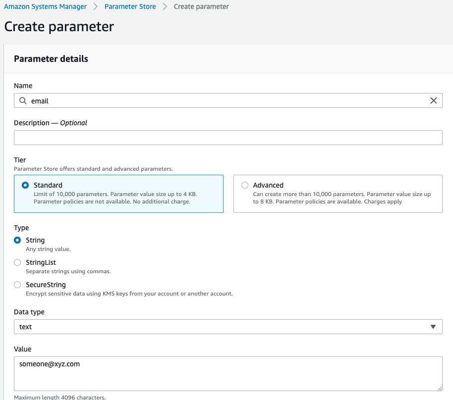
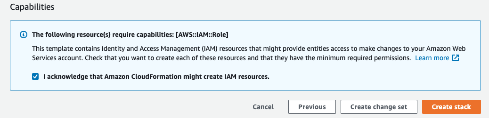
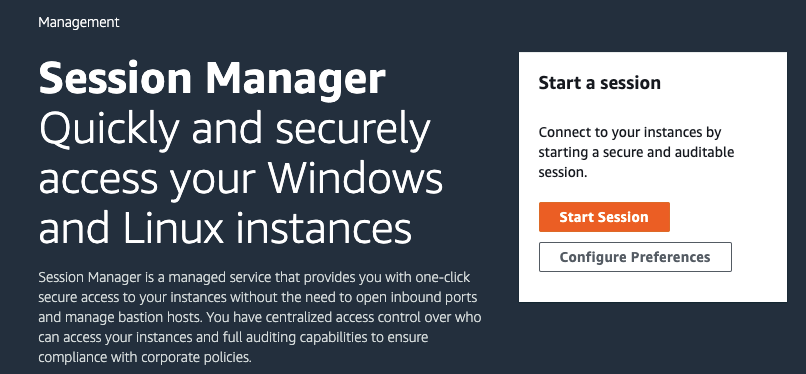

使用 EC2 进行深度学习
您可以使用我们提供的 CloudFormation 模板，快速创建一台拥有 NVidia V100 GPU 的 P3 实例，并使用 Jupyter Notebook 开始您的深度学习过程。 我们目前提供中国宁夏区域的部署模板。
目录
添加账单通知邮箱
为了避免您的账单超出预期，我们在 CloudFormation 模板中设置了一个费用告警，当月费用达到 RMB10000 的 70%，也即 7000元时，会往您提供的邮箱中发送一封邮件。邮箱地址需要先添加到 Amazon Systems Manager 的 Parameter Store 中。 以下展示如何添加邮箱地址到 Parameter Store。
打开 Amazon Systems Manager

创建一个 Parameter

填写邮箱地址
Parameter 名称必须是 email，在 Value 中填入邮箱地址，其它保持默认。

部署 CloudFormation 模板
下载 CloudFormation 模板
右键点击`这个地址 <https://www.kiking.team/CdkMlStack.template.json>`__，将其另存为，保存到本地计算机。
在 CloudFormation 控制台部署 CloudFormation 模板
打开 宁夏区域 CloudFormation 控制台， 创建一个 Stack。

选择模板文件
选择 Upload a template file，选择刚下载的模板文件。

指定 Stack 名称
给 Stack 指点一个方便记忆的名称。其它不变。

确定提交
保持默认选项，一直选择 Next，在最后的 Review 页面，勾选 I acknowledge that Amazon CloudFormation might create IAM resources。然后点击 Create Stack。等待部署完成。

访问 EC2 实例
打开 Session Mangager
回到 Amazon Systems Manager，打开 Session Manager，开始一个 Session。

在实例列表中，选中名为 DeepLearning 的实例，点击 Start Session

切换到 ubuntu 用户
会在一个新标签名中打开 Shell 窗口，在提示符后输入以下命令切换到 ubuntu 用户。
sudo su ubuntu
添加 SSH 公钥
修改 authorized_keys 文件，把您的 SSH 公钥添加到其中，每个公钥一行。
nano ~/.ssh/authorized_keys
修改 Jupyter Notebook 密码
执行以下命令，连续输入两次相同密码
jupyter notebook password
正确设置后，会告知密码保存位置：
Enter password:
Verify password:
[NotebookPasswordApp] Wrote hashed password to /home/ubuntu/.jupyter/jupyter_notebook_config.json
启动 Jupyter Notebook
建议在一个 tmux 进程中启动 Jupyter Notebook
tmux
jupyter notebook
连接到 Jupyter Notebook
以 macOS 为例，
ssh -i 私钥文件 -N -f -L 8080:localhost:8888 ubuntu@EC2公网地址
确认 SSH 连接到 EC2。然后在浏览器地址栏输入 http://127.0.0.1:8080 打开 Jupyte Notebook。输入刚设置的密码，您就可以开始使用 Jupyter Notebook 了。
更多 Deep Learning AMI 的介绍，请参考 这里
删除资源
测试完毕后，回到 CloudFormation 控制台页面，选中 DeepLearning 这个 Stack，点击 Delete ，所有资源即可被清除。